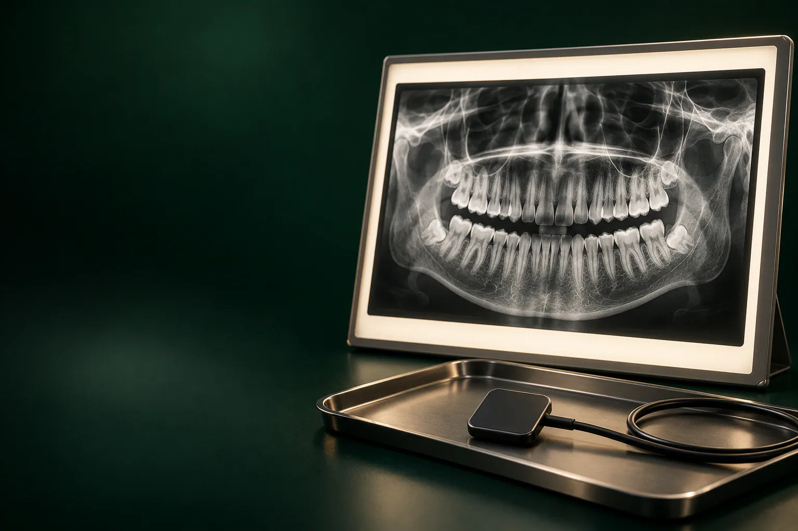
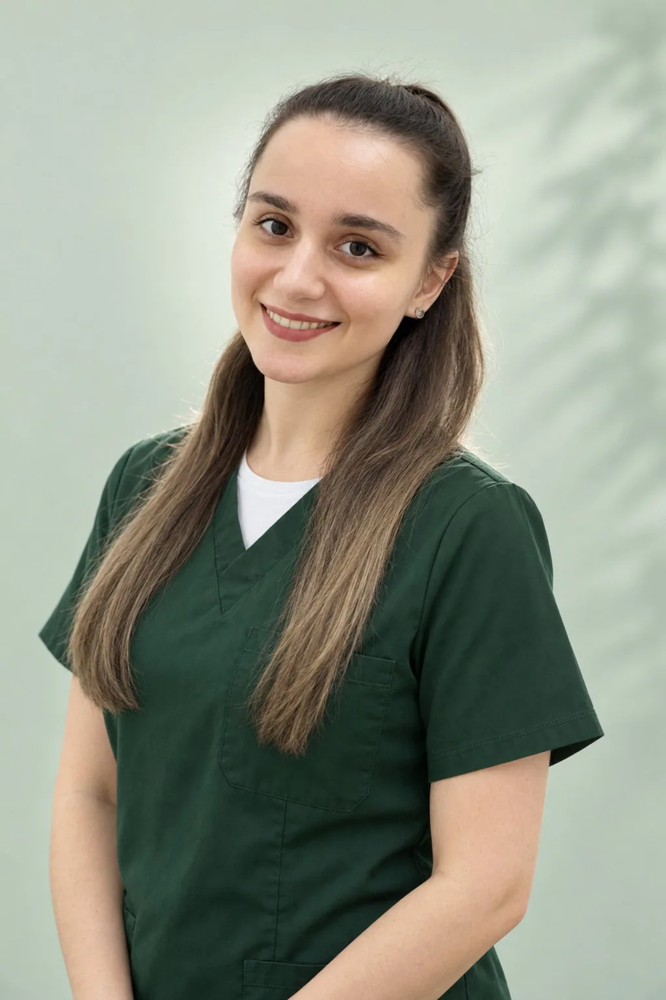

Читайкин Артём Сергеевич
Терапевт, эндодонтист
Лечение кариеса и каналов, сохранение зубов
Записаться к врачу
Панорамный снимок зубов: ортопантомограмма, или ОПТГ, показывает на одном кадре все зубы, их корни и обе челюсти, а прицельный снимок даёт крупный план одного-двух зубов.
Имеются противопоказания. Необходима консультация специалиста.
В стоматологии «Умная Медицина» в пос. Удельная (Раменский округ) ОПТГ стоит 1 700 ₽, прицельный снимок: 500 ₽. Снимок назначает и разбирает вместе с вами врач: терапевт, хирург-имплантолог или ортопед, и консультация с осмотром и планом лечения у них бесплатна.
Цена каждого исследования фиксированная: она не зависит от того, зачем снимок нужен и к какому врачу вы потом пойдёте. Чаще всего хватает одного прицельного снимка или одной ОПТГ. Объёмное исследование (КТ) врач назначает, только если плоского изображения недостаточно, например, перед имплантацией.
Консультация ортодонта стоит 1 700 ₽, детского стоматолога, 2 500 ₽ (повторная, 2 000 ₽). Цены актуальны на 18.10.2026.
уточняем у клиники
Все цены и условия оплаты собраны на странице цены, рассрочка и налоговый вычет.
В клинике делают два вида плоских рентгеновских снимков, панорамный и прицельный, и объёмную КТ. Все снимки цифровые: изображение появляется на экране сразу после съёмки, его не нужно проявлять, а врач может увеличить нужный участок и показать его вам. Как разные исследования складываются в одно обследование, рассказано на странице комплексная диагностика зубов.
ОПТГ: это одно изображение, на котором развёрнуты верхняя и нижняя челюсть целиком. Аппарат объезжает голову по дуге и «разворачивает» зубной ряд в плоскую ленту. Такой снимок даёт общую картину полости рта и становится отправной точкой для плана лечения.
Прицельный снимок показывает один-два зуба крупно и подробно. Небольшой датчик ставят во рту рядом с зубом, а изображение сразу передаётся на компьютер. По такому снимку хорошо видны корни и каналы, кариес между зубами и под старой пломбой, тень у верхушки корня.
На панорамном снимке врач видит:
Поэтому ОПТГ используют при первичном обследовании, при планировании ортодонтического лечения и имплантации. Ограничение у панорамы одно, но важное: это плоская картинка. На ней нельзя измерить толщину кости и точно увидеть, как нервный канал проходит относительно корня, для этого нужна КТ.
Рентгеновское изображение, это игра светлого и тёмного. Плотные ткани и материалы задерживают лучи и выглядят светлыми: эмаль, кость, а пломбы, коронки и импланты, почти белыми. Там, где ткань разрушена или её стало меньше, снимок темнее. Кариес обычно виден как тёмный участок в эмали или дентине, а воспаление у верхушки корня: как тёмное пятно вокруг неё.
Самостоятельно расшифровать снимок сложно: тени соседних зубов и костей накладываются друг на друга, и то, что выглядит как проблема, бывает нормой. Поэтому снимок всегда разбирает врач: он показывает, что видно на изображении, и объясняет, что это значит для лечения.
Вид снимка выбирает врач после осмотра. Ориентироваться можно так:
ОПТГ: плоский обзорный снимок всех зубов. Его удобно использовать для общей оценки и контроля: сколько зубов, где воспаление, как стоят зубы мудрости. КТ, объёмное изображение в срезах: по нему врач измеряет кость, смотрит каналы зуба с разных сторон и оценивает верхнечелюстные пазухи. КТ назначают перед операциями и в сложных случаях лечения, а лучевая нагрузка у неё больше, чем у ОПТГ.
Если нужно объёмное исследование, его можно сделать в той же клинике: КТ участка 5×5 см стоит 2 000 ₽, двух челюстей, 4 500 ₽. Подробнее: на странице КТ зубов и челюстей.
Подготовка к снимку не нужна: есть и пить можно как обычно.
Цифровое оборудование позволяет снизить дозу излучения для пациента по сравнению с плёночными аппаратами. У прицельного снимка нагрузка минимальная, у панорамного: небольшая, у КТ, выше, поэтому объёмное исследование делают только по показаниям.
Жёсткого правила «не чаще стольких-то раз в год» для нужных по лечению снимков нет: каждый снимок назначает врач, если без него нельзя обойтись, и учитывает уже сделанные исследования. Например, при лечении каналов прицельных снимков нужно несколько: без них не проверить результат. Чтобы не повторять снимки без нужды, приносите на консультацию свежие ОПТГ и КТ из других клиник: врач посмотрит, подходят ли они.
Во время беременности рентген делают только по строгим показаниям, например, при остром воспалении, когда без снимка нельзя выбрать лечение. Сообщите врачу о беременности до исследования: плановые снимки обычно откладывают, а при необходимости врач выберет минимальный по объёму вариант, как правило прицельный снимок одного зуба. уточняем у клиники
Детям снимки тоже делают по показаниям: при глубоком кариесе, травме зуба, перед ортодонтическим лечением и чтобы оценить зачатки постоянных зубов. Нужен ли снимок, решает детский стоматолог после осмотра. уточняем у клиники
Цифровой снимок можно получить по электронной почте и показать любому врачу, в том числе обсудить его дистанционно, без повторного визита. уточняем у клиники
На ОПТГ в Удельную приезжают не только жители соседних посёлков, но и пациенты из Люберец, Раменского и Балашихи: снимок можно сделать в день консультации и сразу обсудить его с врачом уточняем у клиники.
Снимок назначает врач того направления, с которым вы пришли, и он же составляет по нему план лечения. Все специалисты: на странице врачи клиники.
Терапевт, эндодонтист
Лечение кариеса и каналов, сохранение зубов
Записаться к врачу
Хирург, имплантолог
Удаление зубов и имплантация, хирургия в сложных случаях
Записаться к врачу
Хирург, имплантолог
Имплантация, удаление зубов и подготовка к имплантации
Записаться к врачу
Главный врач, ортопед
Протезирование и восстановление зубов, протезы на имплантах
Записаться к врачу
Ортопед
Восстановление зубов и протезирование, эстетичные коронки
Записаться к врачу
Терапевт, ортодонт
Эстетическая реставрация и прикус
Записаться к врачу
Детский стоматолог
Дети, профилактика и лечение детских зубов
Записаться к врачуЗдесь публикуем отзывы пациентов, которые делали снимки в клинике, только с их письменного согласия.
отзыв пациента
Корни и каналы, кариес между зубами и под пломбами, воспаление у корней, кисты, непрорезавшиеся зубы и уровень кости. Прицельный снимок показывает один-два зуба подробно, панорамный: все зубы и обе челюсти сразу.
Ортопантомограмма, сокращённо ОПТГ, её ещё называют панорамным снимком или панорамой. В клинике в Удельной она стоит 1 700 ₽.
В стоматологии «Умная Медицина» в пос. Удельная: рядом с Жуковским и недалеко от станции МЦД-3 Удельная. Прицельный снимок стоит 500 ₽, ОПТГ, 1 700 ₽, консультация с разбором снимка, 0 ₽.
Столько, сколько требует лечение: каждый снимок назначает врач по показаниям и учитывает предыдущие исследования. Цифровые аппараты позволяют снизить дозу излучения, а прицельный снимок захватывает только нужный зуб.
Только по строгим показаниям и после разговора с врачом. Обязательно сообщите о беременности заранее: плановые снимки обычно переносят, а при острой боли врач выберет минимальный по объёму снимок.
Да, по показаниям: чтобы оценить зачатки постоянных зубов, перед ортодонтическим лечением, при травме или глубоком кариесе. Решение принимает детский стоматолог после осмотра.
Обычно как тёмное пятно вокруг верхушки корня: в месте воспаления кость менее плотная и пропускает больше лучей. Точно сказать, воспаление это или вариант нормы, может только врач.
ОПТГ: плоский снимок всех зубов для общего обзора. КТ: объёмное изображение, по которому измеряют кость и видят нерв и пазухи; его назначают перед имплантацией, сложным удалением и при трудных каналах.
Да, цифровой снимок можно получить по электронной почте и показать любому врачу. О печати снимка и письменном описании спросите администратора уточняем у клиники.
Нет. Перед съёмкой достаточно снять металлические украшения, очки и съёмные протезы, а во время снимка, не двигаться.
Запишитесь на консультацию: план лечения с ценой по этапам
Имеются противопоказания. Необходима консультация специалиста.
Адрес клиники: Московская обл., Раменский округ, пос. Удельная, ул. Громова, 10/2. Клиника рядом с Жуковским; по соседству Малаховка, Быково, Ильинский, Родники, Островцы, Красково и Октябрьский. Пациенты приезжают и из Люберец, Раменского и Балашихи.
На машине: из Жуковского через Быково, без выезда в Москву. Парковка: уточняем у клиники.
На МЦД-3: до станции Удельная, от неё пешком до клиники. Из Жуковского: от станции Отдых три остановки без пересадок (Ильинская, Быково, Удельная).
Если у вас есть прежние снимки или КТ, возьмите их с собой: врач сравнит их с новым изображением.
Подробнее о клинике: на странице стоматология в Удельной.
Имеются противопоказания. Необходима консультация специалиста.
пгт Удельная, Раменский округ, рядом с Жуковским.
Ежедневно с 9:00 до 21:00
+7 495 150-36-15К нам ездят из Жуковского, Раменского, Быкова, Ильинского, Красково, Малаховки, Островцов, Люберец и Балашихи.
Перезвоним за 5 минут, подберём врача и удобное время.
Оставьте номер, администратор перезвонит и ответит на вопросы.
Подойдёт КТ, панорама, прицельный снимок или фото плана лечения из другой клиники. Врач посмотрит и ответит в течение рабочего дня. Это бесплатно.
Хирург, ортопед и терапевт осмотрят вас вместе, сделаем КТ. Консультация бесплатная, стоимость лечения врач назовёт после осмотра.
Консультацию ведут вместе
ХирургМихаилОртопедЕвгенийТерапевтАртёмПервый визит бесплатно
Хирург, ортопед и терапевт посмотрят ваш случай вместе и предложат два-три варианта с ценой. Оставьте номер, администратор перезвонит и подберёт время.
Скидка 10% на лечение, если оплатить его в день консультации
Перезвоним за 5 минут, ежедневно с 9:00 до 21:00.